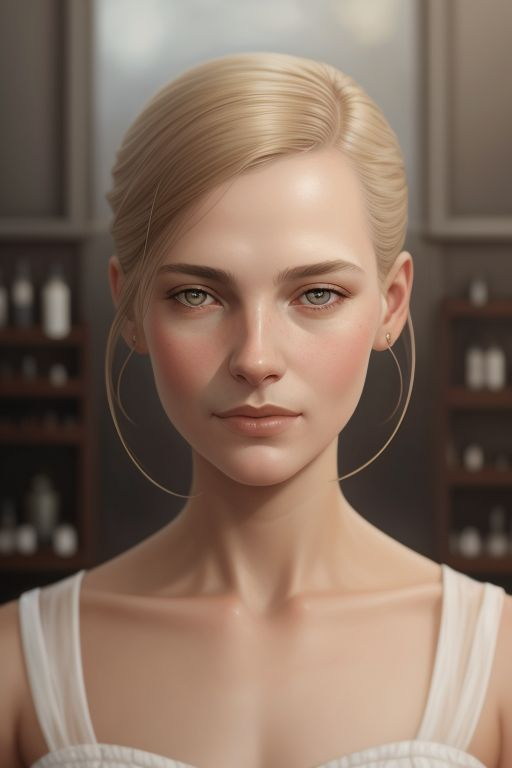
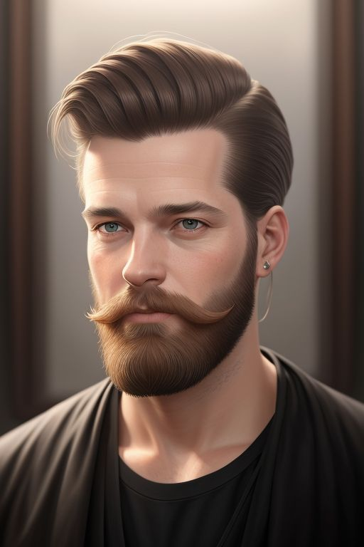
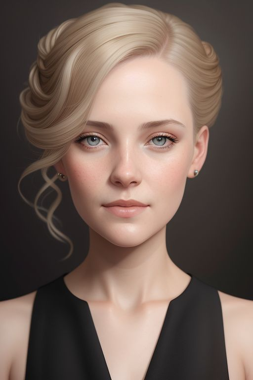

Bedrijfsverhaal: Van Droom naar Realiteit
HaarKunst is ontstaan uit een diepe passie voor haarverzorging en creativiteit. Oprichter
Sophie de Vries begon de zaak in 2012 met één doel voor ogen: een plek creëren waar kunst
en schoonheid samenkomen. Onze missie is om elke klant zich mooi en zelfverzekerd
te laten voelen, in een omgeving die voelt als een tweede thuis. Bij HaarKunst draait het om
persoonlijke aandacht, hoogwaardige producten en de nieuwste technieken.

Sophie de Vries
Specialisatie: Haararchitectuur en creatief kleuren
Als oprichter en hoofdstylist is Sophie al meer dan 15 jaar
actief in het vak. Haar talent voor het combineren van
haarstructuren met innovatieve kleurtechnieken maakt haar de
go-to specialist voor klanten die iets unieks willen. Haar passie
voor creativiteit en techniek komt in elk kapsel terug.

Daan Janssen
Specialisatie: Herenkapsels en baardverzorging
Daan is al ruim 10 jaar dé expert op het gebied van
herenkapsels. Of het nu gaat om een strak geknipt kapsel of
een volledige baardtransformatie, hij weet hoe hij de perfecte
look creëert voor iedere man. Zijn precisie en gevoel voor stijl
maken hem onmisbaar in het team.

Leonie van Dam
Specialisatie: Krullend en golvend haar
Leonie begrijpt krullen als geen ander. Ze heeft zichzelf
gespecialiseerd in technieken om de natuurlijke textuur van
krullend haar optimaal tot zijn recht te laten komen. Of het nu
gaat om fijne slag of volumineuze krullen, Leonie zorgt voor
prachtige resultaten.

Emma Visser
Specialisatie: Bruids- en feestkapsels
Met oog voor detail en een flair voor glamour is Emma onze
expert in bruids- en feestkapsels. Of het nu gaat om een
romantisch opgestoken kapsel voor een bruiloft of een chique
look voor een speciale gelegenheid, Emma zorgt ervoor dat
elke klant zich een ster voelt op haar grote dag.